PhotoPresenter macht aus einem einfachen Fotoordner eine Diashow, die sich wie ein Film anfühlt – mit Kamerafahrten, Gesichtsfokus, Texten, Effekten, einer 3D-Fotowelt und einer Fernbedienung auf dem Handy.
Zufällige Reihenfolge ohne Wiederholung, sanfte Zooms, Schwenks und Kamerafahrten. Freie Ränder werden unauffällig aus dem Foto selbst gefüllt – kein schwarzer Rand, kein verzerrtes Bild.
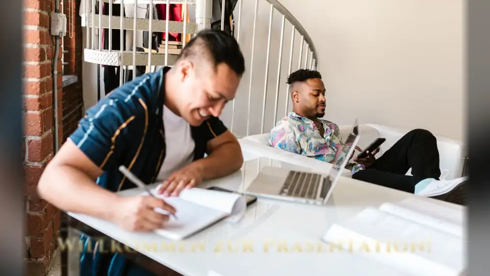
Überblenden, Wischen, Strudel, Welle, Zoom-Unschärfe … zufällig gemischt, Dauer frei wählbar.
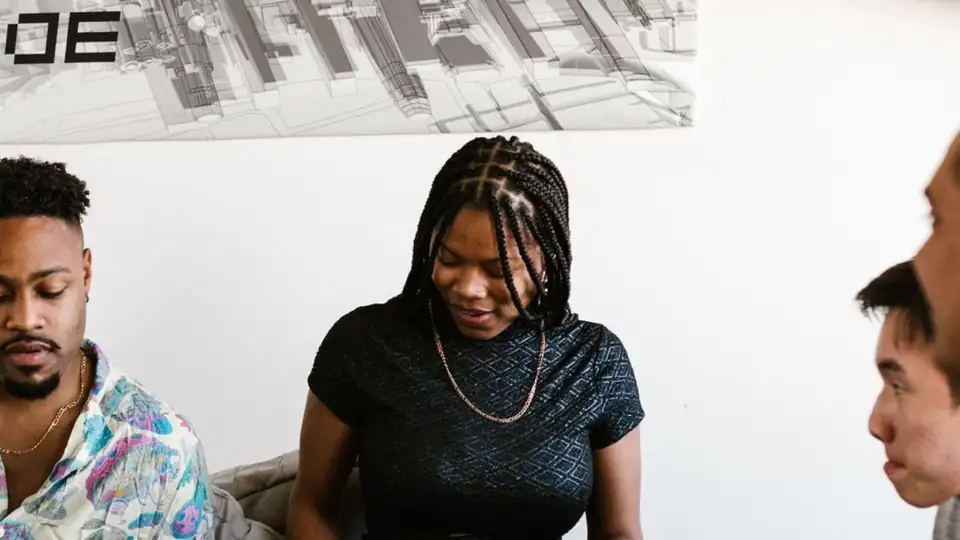
Alle Effekte laufen als WebGL-Shader – flüssig auch auf einem Mini-PC mit Onboard-Grafik.
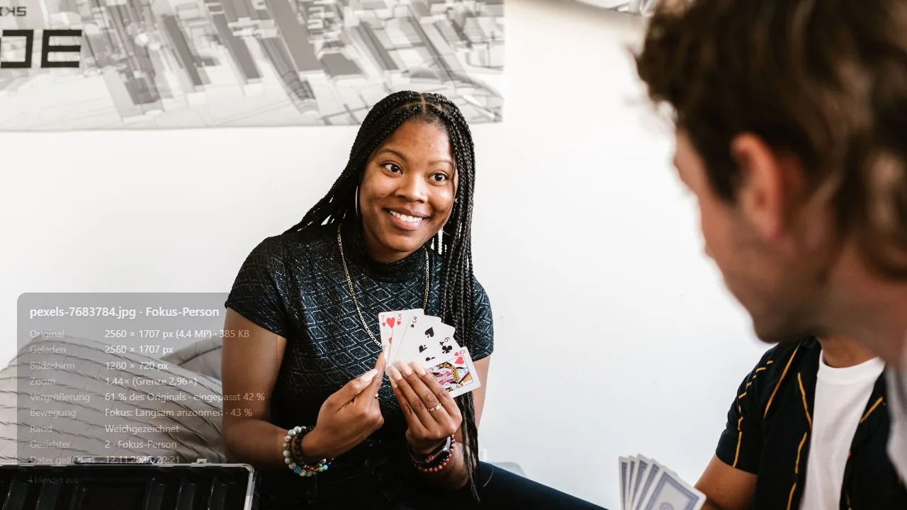
Taste I zeigt Datum, Kamera, Auflösung, Zoom und erkannte Personen zum aktuellen Foto.
Zeig PhotoPresenter ein paar Fotos einer Person – das Programm findet sie in allen anderen wieder und fährt mit der Kamera auf ihr Gesicht zu.
Grüße zwischen den Fotos, Sprüche über bestimmten Bildern, Konfetti im richtigen Moment – und Texte und Emojis suchen sich automatisch einen Platz, an dem sie keine Gesichter verdecken.
Nebel, Polarlicht, Wellen, Lichter – die Farben stammen aus dem vorherigen Foto.
Elegant, Kino, Schreibmaschine, Handschrift … jeweils mit eigener Ein- und Ausblend-Animation.
Konfetti, Herzen, Funkeln, Seifenblasen, Feuerwerk, Schnee – automatisch oder auf Knopfdruck.
Ein Tipp auf dem Handy, und ❤️ 🎉 😂 schweben über das Foto – neben die Gesichter, nicht darauf.
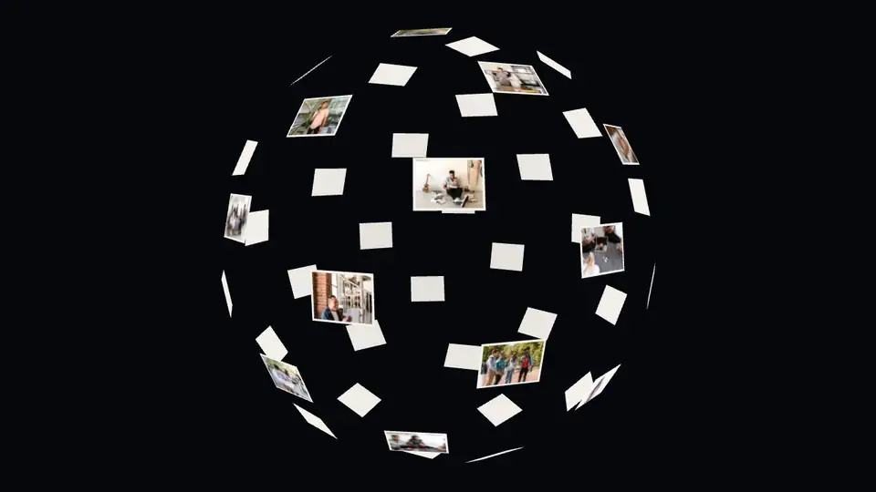
Kugel → Eintauchen ins nächste FotoZwischendurch fliegen die Fotos zu einer Kugel, Spirale, Wand, einem Tunnel oder einem wackelnden Pudding-Würfel zusammen. Die Kamera fliegt durch die Formation und taucht nahtlos in das nächste Foto ein – genau in dessen Größe, ohne Sprung.
Fast jeder Wert ist ein Bereich „von … bis“ – fest oder bei jedem Foto neu gewürfelt. Änderungen wirken sofort, auch in der laufenden Show.
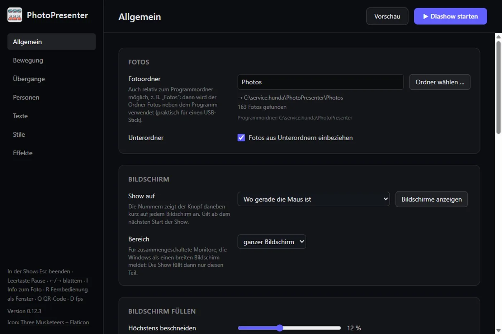
QR-Code scannen – fertig. Keine App, kein Konto, nur dein WLAN. Pausieren, weiterschalten, ein Foto einfrieren, Emojis und Texte einspielen oder die nächsten Fotos aus der Galerie wählen.
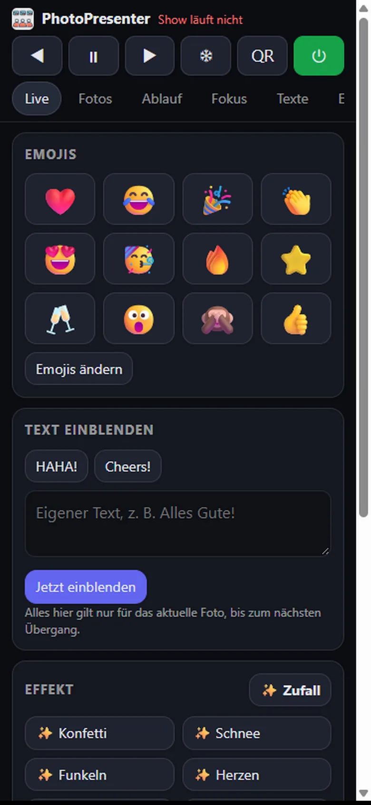
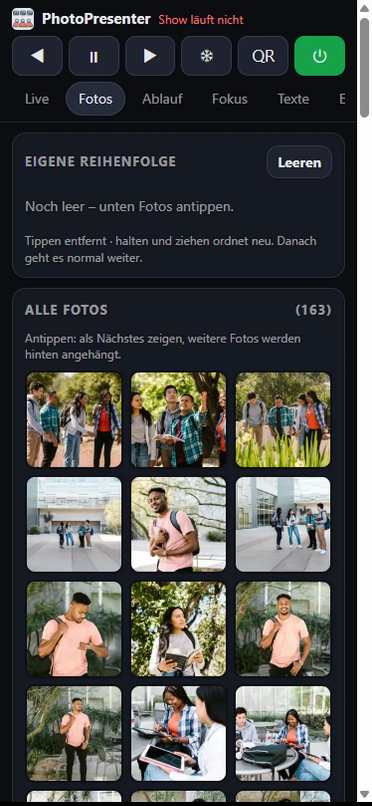
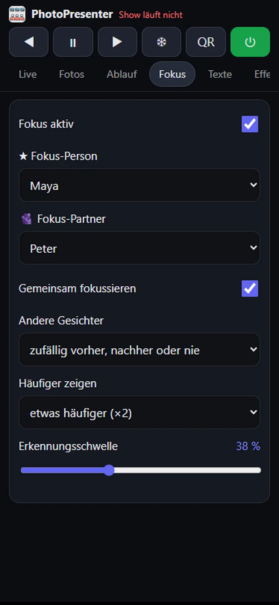
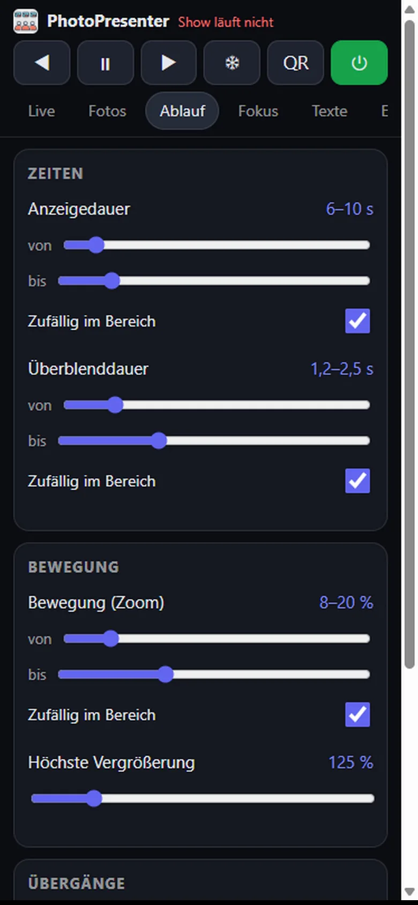
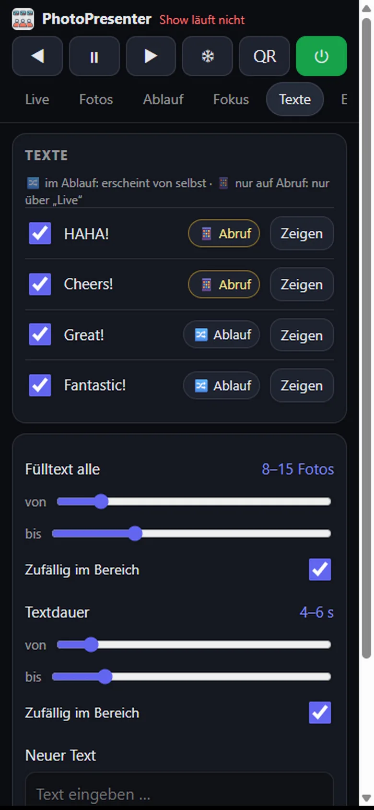
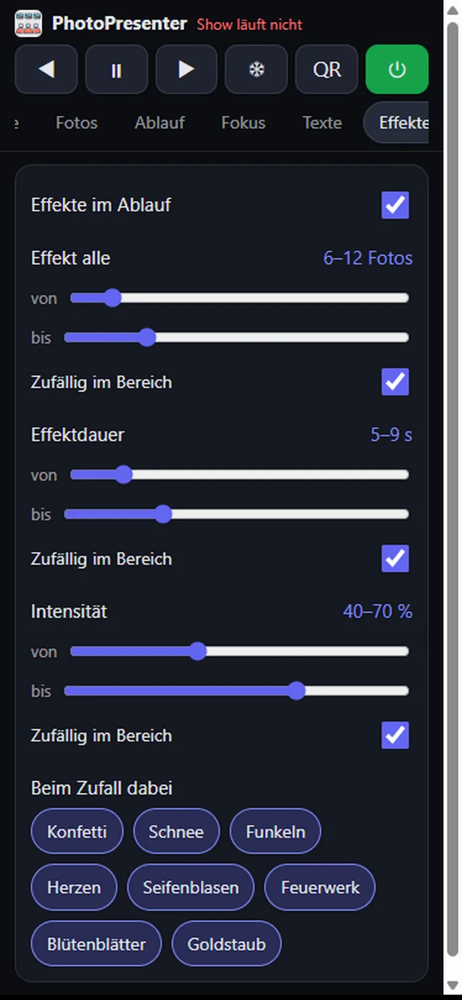
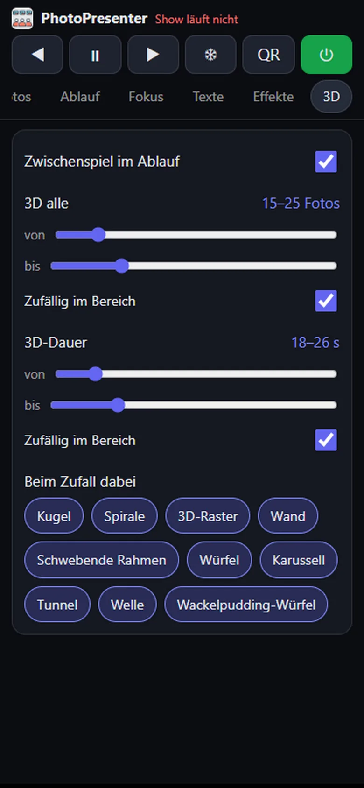
Die portable Version speichert alles neben dem Programm. Ein Klick erstellt einen Weitergabe-Ordner mit Programm, Fotos, Einstellungen, angelernten Gesichtern und Anleitung – auf den USB-Stick, und die Show läuft auf jedem anderen PC genau so weiter.
PhotoPresenter\ ├── PhotoPresenter x.y.z.exe ← Doppelklick ├── Photos\ ← deine Fotos ├── Data\ ← Einstellungen & Gesichter ├── Quickstart.pdf ← Anleitung └── README.txt
Nichts installieren, kein Konto, keine Cloud.
PhotoPresenter-Demo-x.y.z.zip aus dem neuesten Release laden und entpacken –
mit Demo-Fotos und fertigen Einstellungen. Oder nur das portable Programm.
Doppelklick. Windows warnt, weil das Programm nicht signiert ist: „Weitere Informationen“ → „Trotzdem ausführen“.
▶ Diashow starten – später eigenen Fotoordner wählen und mit dem Handy die Regie übernehmen.
Lieber aus dem Quellcode, mit den Demo-Fotos und Demo-Einstellungen? (Node.js ≥ 22.12)
git clone https://github.com/RealCommerzpunk/PhotoPresenter.git cd PhotoPresenter npm install npm run models # Modelle für die Gesichtserkennung (einmalig) npm run demo -- --show # Demo-Diashow starten
Ausführliche Anleitung: Quickstart (PDF)